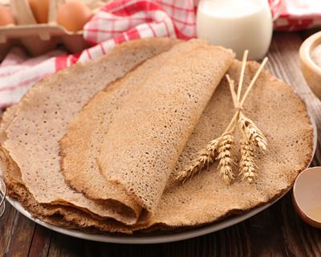

 Oh, pancakes ... Memories of Candlemas and snacks of childhood! If we love them so much, it is because they have been delighting us for a long time and seduce the whole family.
Historians establish the origin of the pancake at 7000 BC. At that time, it was a fairly thick cake, made with a paste mixing water and various crushed cereals. A flat stone, very hot, allowed cooking.
In Brittany, it was in the 13th century that the crepe appeared. Buckwheat, reported in France after the crusades in Asia, has made this thin layer of dough, round shape. This is the beginning of the Breton galette! Because our salty pancakes are always prepared with buckwheat flour, also called buckwheat flour. The advantage of this flour is to be gluten free.
The buckwheat pancake is to be distinguished from the sweet crepe, for which we use wheat flour, milk, eggs, butter. But in both cases, the preparation is gaining greed with its filling! At "La Petite Bretonne", we put our hands in the dough to imagine tasty recipes and authentic, which have the good taste of Brittany ... Or elsewhere.
Because the crepe has the traveling soul. It is found everywhere around the world, with small variations. Think of the famous American pancake, smaller and thicker, the cute blini from Eastern Europe, or the Mexican tortilla, prepared with corn flour. Our national crepe is also cousin of the Italian piadine or the maghreb baghrir.
If making sweet crepes is child's play, sometimes making Breton pancakes can be a real headache and require a little training before being perfect (it breaks, it sticks, it crumbles ... )! Indeed, this dough proves to be quite difficult to work unlike sweet pancakes and sometimes needs to be repeated several times for those who are not accustomed to concoct, especially because it does not contain gluten (but this sometimes depends on the flour used) which helps to give elasticity to the dough. Normally, the batter is cooked with buckwheat flour, water, salt and it's all in the tradition. But sometimes there are different recipes and techniques to prepare the batter and some ingredients can be added to the dough (about me, I add an egg):
Adding an egg (or more depending on the amount of flour) will allow the dough to avoid sticking too much (which does not exclude to well grease its crepe maker) and to give it a color a little darker.
Adding a little wheat flour that contains gluten will bring this famous elasticity and make your patties more flexible. However, the dough should be rested for several hours. Some add 1/3 of wheat flour, others 1/5 or even a single tablespoon, so I do not really have a specific amount to give you.
Adding whole milk is a common technique in Finistère in particular: the patties obtained are more invigorating, mellow and darker. However, the taste of buckwheat is a little less I think.